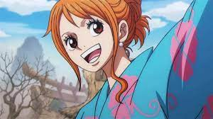

Año de estreno Manga: 1997
Año de estreno Anime: 1999
Pais de origen: Japon
Géneros: Shonen, Aventuras, Accion, Fantasia
Creador Eiichiro Oda
Sinopsis: Monkey D. Luffy se niega a que nadie se interponga en su camino para convertirse en Rey de los Piratas. Se lanza a surcar los mares y se convertirá en un capitán dispuesto a no darse por vencido jamás hasta hacerse con el mayor tesoro de la historia: el legendario One Piece.
| Luffy | Zoro | Sanji | Nami | Usopp | Chopper | Robin | Franky | Brook | Jinbe |
|---|---|---|---|---|---|---|---|---|---|
|
|
|
|
 |
|
|
|
|
||
| Luffy: Es el capitan del barco de los piratas del sombrero de paja y junto a su tripulacion quiere convertirse en el rey de los piratas. | Zoro: Es el espadachin y segundo al mando dentro de la tripulacion el se encarga de pelear junto a su capitan cuando hay enemigos poderosos | Sanji: Es el cosinero y tercero al mando dentro de la tripulacion es el que se encarga de la comida y tambien es un luchador fuerte junto con Luffy y Zoro | Nami | Usopp | Chopper | Robin | Franky | Brook | Jinbe |